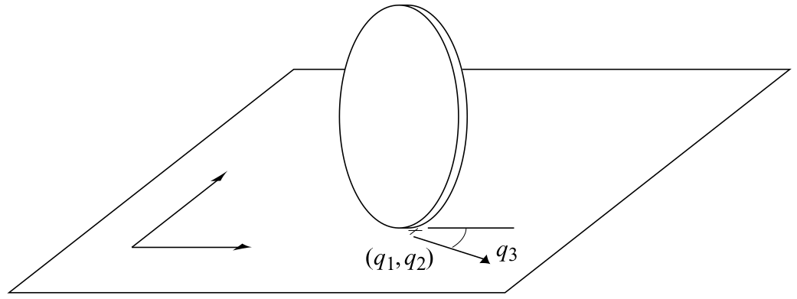

3 Unicycle

3.1 Dynamics
- Parameters
- state space \(\mathcal{X}\)
- action space \(\mathcal{U}\)
- State: \(\mathbf{x}= \begin{pmatrix}x, y, \theta\end{pmatrix}^\top \in \mathcal{X}\) [m, m, rad] (position and orientation of the robot in the world frame)
- Action: \(\mathbf{u}= \begin{pmatrix} v, \omega \end{pmatrix}^\top \in \mathcal{U}\) [m/s, rad/s] (speed and angular speed, respectively)
- Dynamics: \[ \begin{aligned} \dot x &= v \cos \theta \\ \dot y &= v \sin \theta \\ \dot \theta &= \omega \end{aligned} \]
3.2 Differential Flatness
Pick flat outputs \(\mathbf{z}(t) = (x(t), y(t))^\top\), i.e., the position of the unicycle. Then we can compute all necessary variables if \(\mathbf{z}(t)\) is at least C2-continuous. \[ \begin{aligned} \mathbf{x}(t) &= g_x(\mathbf{z}, \dot{\mathbf{z}}) = \left(x, y, \arctan \left(\frac{\dot y}{\dot x}\right)\right)\\ \mathbf{u}(t) &= g_u(\dot{\mathbf{z}}, \ddot{\mathbf{z}}) = \left({\color{red} \pm}\sqrt{\dot y^2 + \dot x^2}, \frac{\dot x \ddot y - \dot y \ddot x}{\dot x^2 + \dot y^2} \right) \end{aligned} \]
Divide y and x-part of the dynamics, yields \(\theta\): \[ \begin{aligned} \frac{\dot y}{\dot x} &= \frac{v \sin \theta}{v \cos \theta}\\ \frac{\dot y}{\dot x} &= \tan \theta\\ \theta &= \arctan \left(\frac{\dot y}{\dot x}\right) \end{aligned} \]
Using the x-part, rearranging for \(v\) and substituting the expression for \(\theta\), yields \(v\): \[ \begin{aligned} v &= \frac{\dot x}{\cos \theta}\\ &= \frac{\dot x}{\cos \left(\arctan \left(\frac{\dot y}{\dot x}\right)\right)}\\ &= \dot x \sqrt{\frac{\dot y^2}{\dot x^2} + 1} = \dot x \sqrt{\frac{\dot y^2}{\dot x^2} + \frac{\dot x^2}{\dot x^2}}\\ &= {\color{red} \pm}\sqrt{\dot y^2 + \dot x^2} \end{aligned} \]
Taking the time-derivative of the expression for \(\theta\) yields \(\omega\) \[ \begin{aligned} \omega &= \dot \theta = \frac{d}{dt} \arctan \left(\frac{\dot y}{\dot x}\right)\\ &= \frac{\dot x \ddot y - \dot y \ddot x}{\dot x^2 + \dot y^2} \end{aligned} \]
3.3 Invariance
The dynamics are translation-invariant.
3.4 Controllers
3.4.1 Geometric Controller (Kanayama et al. (1990))
- Given reference state \(\mathbf{x}_r = \begin{pmatrix}x_r, y_r, \theta_r\end{pmatrix}^\top \in \mathcal{X}\) and reference action \(\mathbf{u}_r = \begin{pmatrix} v_r, \omega_r \end{pmatrix}^\top \in \mathcal{U}\)
- \(K_x, K_y, K_\theta\in\mathbb R^+\) are tuning gains
- Control law: \[\begin{aligned} x_e &= (x_r-x)\cos \theta + (y_r-y)\sin \theta\\ y_e &= -(x_r-x)\sin \theta + (y_r-y)\cos \theta\\ \theta_e &= \theta_d \ominus \theta \\ v &= v_r \cos \theta_e + K_x x_e\\ \omega &= \omega_r + v_r (K_y y_e + K_\theta \sin \theta_e) \end{aligned} \]
3.4.2 Action Mixing
Geometric controllers might output actions that are outside the nominal action space \(\mathcal{U}\) (saturation limits). To remedy this, a QP can be used that prefers \(\omega\) over \(v\) using a tuning parameter \(\lambda\):
\[ \begin{aligned} \min_{v^*, \omega^*} & \, (\omega^* - \omega) ^2 + \lambda (v^* - v)^2 \\ \text{s.t.} & \, \begin{pmatrix} v^*, \omega^* \end{pmatrix}^\top \in \mathcal{U} \end{aligned} \]
3.5 Useful Parameters
3.5.1 unicycle1_v0 (Ortiz-Haro et al. (2024))
A basic version \[ \mathcal{U}= [-0.5, 0.5] m/s \times [-0.5, 0.5] rad/s \]
3.5.2 unicycle1_v1 (Ortiz-Haro et al. (2024))
A plane-like version with minimum speed
\[ \mathcal{U}= [0.25, 0.5] m/s \times [-0.5, 0.5] rad/s \]
3.5.3 unicycle1_v2 (Ortiz-Haro et al. (2024))
A plane-like version with a rudder damage
\[ \mathcal{U}= [0.25, 0.5] m/s \times [-0.25, 0.5] rad/s \]